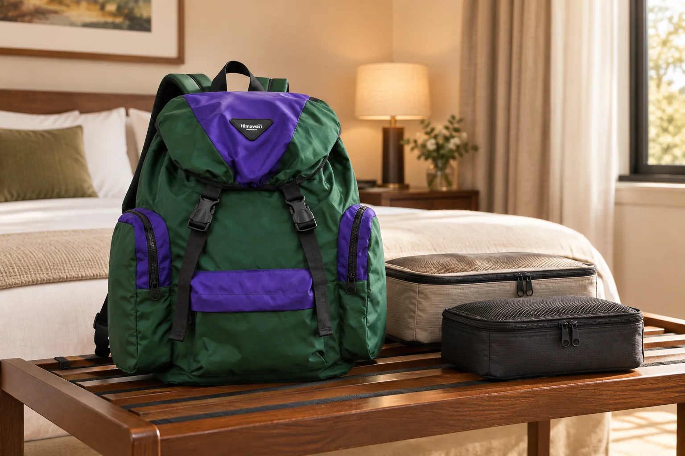

숙소에 도착하면 백팩도 다음 외출에 맞춰 바꾸기

집에서 숙소까지 갈 때는 갈아입을 옷과 세면도구가 필요했지만 저녁 식사를 하러 나갈 때도 같은 짐을 모두 들 필요는 없을 수 있습니다. 백팩 하나로 여행하는 일정이라면 도착 뒤에 내용물을 바꾸는 시간이 생깁니다. 덜어낼 물건만 고르는 데서 끝내지 않고 어디에 두었다가 다시 합칠지 정해봅니다. 그래야 외출용 배치와 다음 이동의 배치가 이어집니다.
숙소에 들어오면 먼저 짐을 펼칠 자리를 찾습니다. 사용할 수 있는 선반이나 짐 받침대가 있는지 보고 시설의 안내를 따릅니다. 가방을 두는 자리와 깨끗한 옷을 펼칠 자리를 나누어볼 수 있습니다. 방 곳곳에 소품을 하나씩 내려놓으면 다시 회수할 위치가 늘어나므로 꺼낸 묶음을 모아둘 영역부터 정하는 편이 낫습니다.
방에 둘 묶음과 밖에서 쓸 물건
이번 외출의 길이와 방문할 곳을 생각합니다. 식사만 하고 돌아오는 일정과 오래 돌아다니는 일정은 필요한 물건이 다를 수 있습니다. 옷과 세면도구처럼 지금 밖에서 쓰지 않을 묶음을 먼저 골라봅니다. 물건을 전부 쏟아 새로 분류하기보다 이미 사용 중인 파우치 단위로 나누면 다음 이동 전에 합치는 순서가 단순해집니다.
꺼낸 파우치를 어디에 두었는지 알아볼 수 있게 정합니다. 세면도구가 욕실로 옮겨졌다면 다른 짐과 장소가 달라졌다는 것을 기억해야 합니다. 충전할 기기를 선반에 놓으면 가방에는 빈자리가 생깁니다. 빈 공간을 다른 물건으로 바로 채우기 전에 이 물건이 다시 돌아와야 하는지 봅니다. 이동 준비와 잠깐의 외출 준비를 같은 상태로 생각하지 않습니다.
지갑과 휴대전화처럼 가지고 나갈 개인 물건은 익숙한 위치로 돌려놓습니다. 숙소의 카드키나 열쇠를 처음 받았다면 돌아와 꺼낼 자리를 정하세요. 평소 쓰지 않는 물건을 임의의 틈에 넣으면 문 앞에서 찾기 어려울 수 있습니다. 가상 준비로 열쇠를 넣고 꺼내는 동작을 한 번 해보면 보관 위치를 결정하기 쉽습니다.
숙소에 두는 물건은 실제 보관 안내와 시설을 확인해 정합니다. 가방에서 꺼내 한곳에 모았다는 이유로 보관이 모두 해결된 것은 아닙니다. 공용 공간을 쓰는 일정이면 개인 짐을 둘 수 있는 장소부터 알아보세요. 확인되지 않은 시설을 이용할 것이라고 전제하지 않고, 물건을 맡기거나 두는 방식은 해당 안내에 맞춥니다.
함께 소개하는 Himawari No.1111 제품 정보는 이동과 외출에 같은 가방을 쓸지 생각할 자료입니다. 이 경우에는 가득 담은 상태뿐 아니라 필요한 짐만 남겼을 때 물건을 찾는 방식도 살펴봅니다. 다음 외출에 쓸 묶음을 넣고 실제로 열어보세요. 남은 소품이 깊이 흩어져 있다면 기존의 작은 묶음을 활용해 위치를 정할 수 있습니다.
짐을 덜어낸 뒤에는 가방을 닫고 평소처럼 메어봅니다. 어제와 내용이 달라졌으므로 안에서 물건이 어떻게 놓였는지 살펴볼 이유가 있습니다. 단단한 물건이 한쪽에만 모였다면 위치를 조정할 수 있습니다. 빈 모양을 채우기 위해 필요 없는 짐을 다시 넣기보다 실제로 가져갈 물건이 어디에 돌아갈지 정하는 편이 외출 목적에 가깝습니다.
다시 들어왔을 때부터 체크아웃까지
외출에서 돌아오면 새로 생긴 영수증이나 포장을 개인 소지품과 나눕니다. 방에 두었던 묶음과 섞기 전에 무엇을 계속 보관할지 정합니다. 당장 다음 외출이 예정되어 있으면 쓰는 물건을 원래 위치로 돌려놓고, 이동할 예정이면 숙소에 남겨둔 짐을 다시 합칠 준비를 합니다. 하루의 일정이 바뀌면 같은 가방의 역할도 다시 정해집니다.
다음날 아침까지 사용할 물건은 마지막 회수 항목으로 남겨둡니다. 충전 중인 기기와 선, 욕실의 개인 세면도구처럼 지금 가방에 넣을 수 없는 것을 적을 수 있습니다. 긴 일반 목록보다 현재 실제로 꺼내둔 물건을 기록하는 방식입니다. 어디에 놓았는지도 붙이면 가방의 빈자리와 방의 위치를 연결할 수 있습니다.
동행자와 방을 함께 쓰면 개인 물건과 공동으로 쓰는 물건을 구분합니다. 비슷한 충전선이나 파우치를 한곳에 모아두었다면 자신의 것인지 확인하고 담습니다. 누가 회수할지 정한 물건은 서로 알고 있어야 합니다. 한 사람이 모두 챙겼다고 생각한 뒤 다른 사람이 다시 사용하는 상황이 있으면 마지막에 실제 상태를 확인할 필요가 생깁니다.
체크아웃 전에는 꺼낸 장소를 따라 확인합니다. 짐을 둔 자리, 사용한 서랍, 콘센트 주변, 욕실처럼 실제로 쓴 위치를 봅니다. 가방을 이미 닫았어도 발견한 물건이 있으면 넣을 곳을 다시 정합니다. 정돈된 모양 때문에 급하게 틈에 밀어 넣기보다 다음 이동에서 꺼낼지까지 생각해 배치를 마칩니다.
숙소의 열쇠나 카드키는 반환 안내를 따릅니다. 반환하기 전까지 개인 열쇠와 섞이지 않도록 두고 절차를 마친 뒤 자신의 물건을 확인합니다. 이후 이동에서는 체크인 때와 다른 물건을 먼저 쓸 수 있습니다. 승차 정보와 지갑처럼 필요한 항목이 깊이 들어가 있지 않은지 보고, 어젯밤 외출용 배치를 이동용으로 바꾸어봅니다.
집으로 돌아온 뒤 여행 기록에는 숙소에 남겼던 묶음과 마지막에 회수한 물건을 적어둘 수 있습니다. 다음 여행에서 사용할 보관 순서를 생각하는 자료가 됩니다. 같은 숙소나 가방을 계속 써도 그날의 일정은 다르므로 목록을 그대로 옮기기보다 실제로 꺼낸 것을 기준으로 준비하세요. 도착했을 때 둘 자리와 떠나기 전 합칠 순서가 각각 정해져 있으면 됩니다.